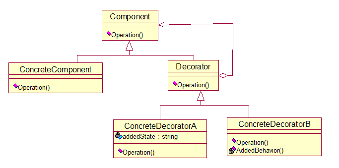
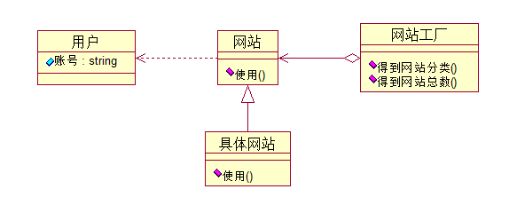
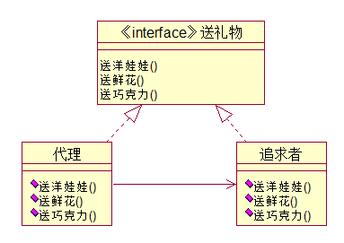

结构型模式：
动态地给一个对象添加一些额外的职责。
优点：
把类中的装饰功能从类中搬移出去，这样可以简化原有的类。有效地把类的核心功能和装饰功能区分开了。
已经开发完毕的对象，后期由于业务需要，对旧的对象需要扩展特别多的功能，这时候使用给对象动态地添加新的状态或者行为（即装饰模式）方法，而不是使用子类静态继承
装饰模式，给一个对象动态添加额外职责，这些职责需要由用户决定加入的方式和时机。装饰模式提供了“即插即用”的方式，在运行期间决定何时增加何种功能。就增加功能来说，装饰模式比生成子类更加灵活。
方法：
1，定义一个对象接口Component
2，定义一个具体的对象ConcreteComponent
3，定义一个装饰类Decorator
4，定义装饰类的具体对象ConcreteDecoratorA等
给ConcreteComponent对象添加职责
举例说明：
例如：一幅画，可以直接挂到墙上，也可以加上框架和镶上玻璃后，再挂到墙上。
装饰模式结构图：

代码如下：
//Component 类
abstract class Component
{
public abstract void Operation();
}
//ConcreteComponent 类
class ConcreteComponent : Component
{
public override void Operation()
{
Console.WriteLine("具体对象的操作");
}
}
//Decorator 类
abstract class Decorator : Component
{
protected Component component;
public void SetComponent(Component component)
{
this.component = component;
}
public override void Operation()
{
if (component != null)
{
component.Operation();
}
}
}
class ConcreteDecoratorA : Decorator
{
private string addedState;
public override void Operation()
{
base .Operation();
addedState = "new state";
Console.WriteLine("具体装饰对象A的操作");
}
}
class ConcreateDecoratorB:Decorator
{
public override void Operation()
{
base.Operation();
AddedBehavior();
Console.WriteLine("具体装饰对象B的操作");
}
private void AddedBehavior()
{
}
}
为子系统中的一组接口提供一个一致的界面，此模式定义了一个高层接口，这个接口使得这一子类系统更加容易使用。
外观类，它需要了解所有的子系统的方法和属性，进行组合，以备外界调用（将子类的方法和属性组合到外观类）
举例说明：
例如：我们拨打10086，可以办理，彩铃，手机报，全时通等业务（子对象），而10086则是为子对象所使用的一致界面。
课本实例：基金股票
代码如下：
//基金类
class fund
{
stock1 gu1;
stock2 gu2;
public fund()
{
gu1=new stock1 ();
gu2 =new stock2 ();
}
public void buyfund()
{
gu1.buy();
gu2.buy();
}
public void sellfund()
{
gu1.sell();
gu2.sell ();
}
}
运用共享技术有效地支持大量细粒度的对象。
应用：
如果一个应用程序使用了大量的对象，而大量的这些对象造成了很大的存储开销时，就应该考虑使用。还有就是对象的大多数状态可以外部状态，如果删除对象的外部状态，那么可以用相对较少的共享对象取代很多组对象，此时可以考虑使用享元模式。
举例说明：
例如：公共交换电话网（PSTN）是享元的一个例子。有一些资源例如拨号音发生器、振铃发生器和拨号接收器是必须由所有用户共享的。
课本实例：多个网站，不同形式（博客，新闻发布等）
如图：

代码如下：
//用户
public class User
{
private string name;
public User(string name)
{
this.name = name;
}
public string Name
{
get { return name; }
}
}
//网站抽象类
abstract class WebSite
{
public abstract void Use(User user);
}
//具体网站类
class ConcreteWebSite : WebSite
{
private string name = "";
public ConcreteWebSite(string name)
{
this.name = name;
}
public override void Use(User user)
{
Console.WriteLine("网站分类：" + name + "用户：" + user.Name);
}
}
//网站工厂类
class WebSiteFactory
{
private Hashtable flyweights = new Hashtable();
//获得网站分类
public WebSite GetWebSiteCategory(string key)
{
if (!flyweights.ContainsKey(key))
flyweights.Add(key, new ConcreteWebSite(key));
return ((WebSite)flyweights[key]);
}
//获得网站分类总数
public int GetWebSiteCount()
{
return flyweights.Count;
}
}
为其他对象提供一种代理以控制对这个对象的访问。
方法：
1,定义一个公共接口类(subject类)
2,定义一个真实的类(代理所代表的真实实体)(RealSubject类)
3,代理类,保存一个引用使得代理可以访问实体,并提供一个与公共接口相同的接口,这样代理就可以用来替代实体
课本实例：代别人追求女孩
如图：

代码如下：
//被追求者类
class SchoolGirl
{
private string name;
public string Name
{
get { return name; }
set { name = value; }
}
}
//代理接口
interface IGiveGift
{
void GiveDolls();
void GiveFlowers();
void GiveChocolate();
}
//追求者类
class pursuit : IGiveGift
{
SchoolGirl mm;
public pursuit(SchoolGirl mm)
{
this.mm = mm;
}
public void GiveDolls()
{
Console.WriteLine(mm.Name + "送你洋娃娃");
}
public void GiveFlowers()
{
Console.WriteLine(mm.Name + "送你鲜花");
}
public void GiveChocolate()
{
Console.WriteLine(mm.Name + "送你巧克力");
}
}
//代理类
class proxy : IGiveGift
{
pursuit gg;
public proxy(SchoolGirl mm)
{
gg = new pursuit(mm);
}
public void GiveDolls()
{
gg.GiveDolls();
}
public void GiveFlowers()
{
gg.GiveFlowers();
}
public void GiveChocolate()
{
gg.GiveChocolate();
}
}